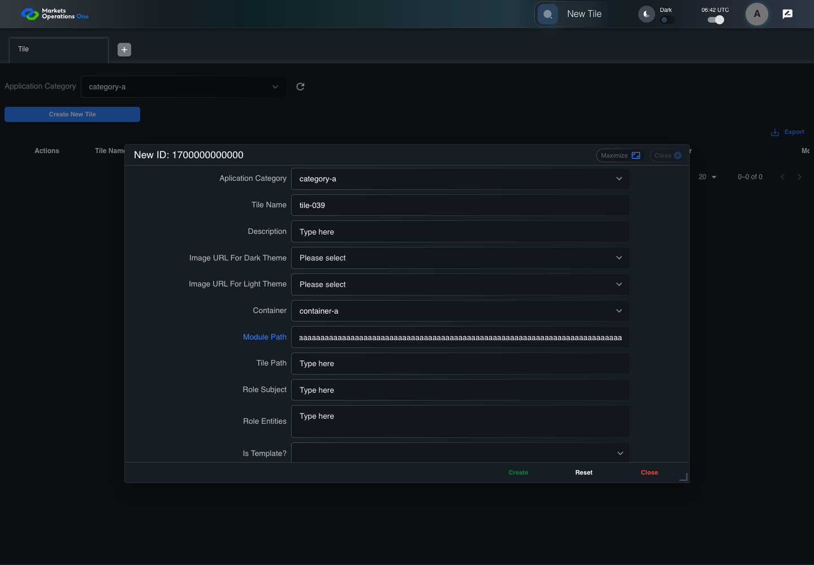
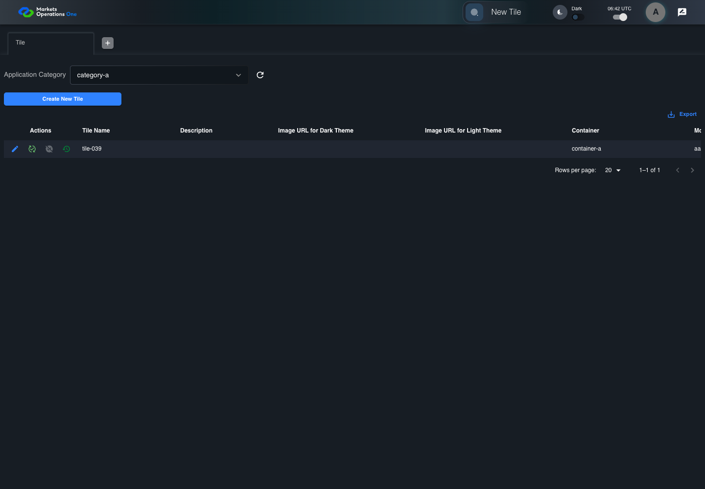
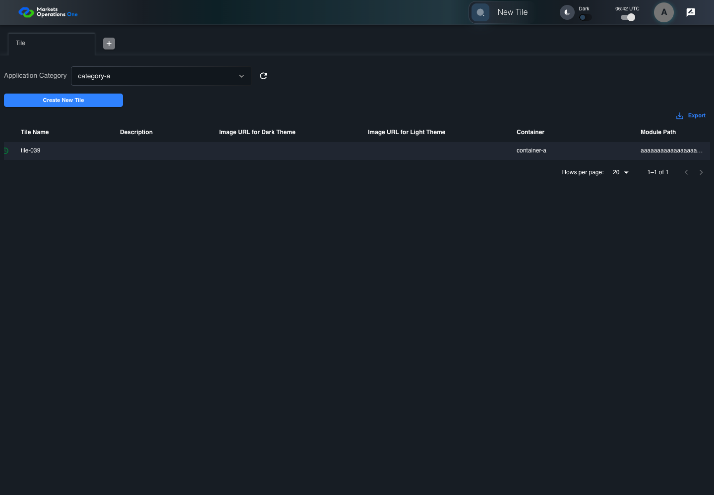

BFF-ADM-039 current BFF administration through actual UI
PASS · application/run-072/bff-adm-039-current-bff-administration-through-actual-ui-56fc81b05b14-attempt-1 · ACTUAL_APPLICATION_LOCAL_SERVICES
Actual current React and exact-current BFF admin controllers/services/JPA with actual migration DDL in disposable PostgreSQL. Controlled OUD/EMS2 identities and local Spring bootstrap. Fixture SQL seeds/mutates isolated records; service errors are actual database errors. Undefined agreed messages remain unresolved acceptance.
2026-10-22T06:42:44.557Z to 2026-10-22T06:42:52.186Z
Assertions and result · Artifact manifest · Exact run inputs and source hashes
Result SHA-256:499542a1571257fd96724932095172a8c4f628514812dabd0975a1f0f339aeefMachine observations
- actual-identity-projection.json
d4b382f3a682658f9932514797ef7eae99a9161b96965fd9229115fb8712c183 - actual-migration-schema.json
8ee6ddf7216810033ac2b41030bdb40476f2b307331b83a71f062aeed57684e8 - baseline-inputs.json
0b5c38cbee6dbdde8199b8d9612e530c2c20a1d923b5eb3cdd5e33aa97c43bb8 - bff-boundary.json
da8d12b6fa465a2f19ad8ecb6a4c06dfd35c4e81a19c421c1517841ea86546c3 - committed-ui-submission-comparisons.json
9ba25cce6c9c08860d002db6ff4a527d3eeb5e3f2082b32f58d5a116154053c6 - creation-clock.json
2b87423e0af829e422de25e391a4b652c1b3b24521ab61b9e32982a73a373d11 - empty-filter-rule-representation.json
88551dadd9fc51a0d06e475bd6868e8e7b5af38482e0e2ace843b1c7e53c6f2a - fixture-step-10.json
b3066c3de8652df842b1c6f4ef00c20d5647819005cc7d67f0d7003c47216f7e - fixture-step-11.json
876a31fb092c3390d3b2189242b2be525d1215fdf56e9e4852307808c879e5cb - fixture-step-6.json
04d6137ab7fb2564d14b74e3e15676686b9dadd6cb657f63071df119ff8b3f6b - fixture-step-7.json
02f250f50684d0f0b5e616914774c0e1be3fdd2904c6e55260f281be0fea2e9a - fixture-step-8.json
3c59ef22c09876ecf69b21a648444b33ab04764e1377c36dad0dbe083caa76f1 - fixture-step-9.json
6cbd9e9d66fb0aa7eac1854b68daa386d26eb846d79f96c0b1b5600a1c1cf4bb - initial-persisted-records.json
e21dfc94fae69bc9349c84fa0be6d399b66f6ed577b1a019e99f6c55c32f4712 - persisted-after-submit.json
03c87d69efd47c6207f6859f1414af5f10a755715af4399f92dae13a1dd26d64 - reference-snapshot-3.json
ac1655fb78e8ca838d299e17078fc31231571fb978b2b5f8140220e3fad7c585 - reference-snapshot-4.json
8c8230b8ac3d8893e10feff6c8236e0ed4446433b1b923d5ec4be149580cecbc - ui-origin-bff-requests.json
0069af5bca55425271fc374d07ce3d6e12b3adb66608e7e2acff991c30ea3f6d
Screenshot capture: CAPTURED. Named frames: 26.
Step screenshot evidence: COMPLETE. 25/25 canonical steps have execution screenshots.
Canonical step timeline
Given Admin A uses subject "admin-a" with role "FMO_ADMIN" in an isolated authenticated browser
Execution: PASSED.
1. step-01 Visible state after step 1: Given Admin A uses subject "admin-a" with role "FMO_ADMIN" in an isolated authenticated browser
2026-10-22T06:42:47.176Z · 1440×1000
Step: /Users/lushevol/code/github/ratan-release-impact/workbench/tasks/ui-test-coverage-20261022/test-cases.md:16328
SHA-256:6ea79714d57b6f05b4cb6b6c68ded1d1ece0cde7798d15719a901561b7526d20And the controlled Tile fixture records the initial grid rows and persisted values
Execution: PASSED.
2. step-02 Visible state after step 2: And the controlled Tile fixture records the initial grid rows and persisted values
2026-10-22T06:42:47.317Z · 1440×1000
Step: /Users/lushevol/code/github/ratan-release-impact/workbench/tasks/ui-test-coverage-20261022/test-cases.md:16329
SHA-256:37b17abe8bc6b507b32276f4d0153d38c71acee765fbaf2f0d67da4b490e58f3And Category 101 has label "category-a" and Import Map 201 has Module Name "container-a"
Execution: PASSED.3. step-03 Visible state after step 3: And Category 101 has label "category-a" and Import Map 201 has Module Name "container-a"
2026-10-22T06:42:47.365Z · 1440×1000
Step: /Users/lushevol/code/github/ratan-release-impact/workbench/tasks/ui-test-coverage-20261022/test-cases.md:16330
SHA-256:46a8223394b10f887f5999217ffe413af0677f6e2d752ff78daf15493346d7b7And both references belong to "FMO_ADMIN" and the Tile page category filter value is Category 101
Execution: PASSED.
4. step-04 Visible state after step 4: And both references belong to "FMO_ADMIN" and the Tile page category filter value is Category 101
2026-10-22T06:42:47.432Z · 1440×1000
Step: /Users/lushevol/code/github/ratan-release-impact/workbench/tasks/ui-test-coverage-20261022/test-cases.md:16331
SHA-256:736872e40efb46f331f6696929dc757dc582c6fe9c1a5e805fa3499890e07ac2And the controlled creation clock returns 1700000000000 milliseconds
Execution: PASSED.
5. step-05 Visible state after step 5: And the controlled creation clock returns 1700000000000 milliseconds
2026-10-22T06:42:47.483Z · 1440×1000
Step: /Users/lushevol/code/github/ratan-release-impact/workbench/tasks/ui-test-coverage-20261022/test-cases.md:16332
SHA-256:5e1466f5f8eeb7cae56b67e39d2d5acf76b3e7151d493ada9139daaf6999d999And the baseline fixture data defines "Tile Name" as "tile-039"
Execution: PASSED.
6. step-06 Visible state after step 6: And the baseline fixture data defines "Tile Name" as "tile-039"
2026-10-22T06:42:47.534Z · 1440×1000
Step: /Users/lushevol/code/github/ratan-release-impact/workbench/tasks/ui-test-coverage-20261022/test-cases.md:16333
SHA-256:2f0a6b2d8811df22197b0a2aa705440c32653880bebb717f4e59c63fc896447bAnd the baseline fixture data defines "Module Path" as "/fixture"
Execution: PASSED.
7. step-07 Visible state after step 7: And the baseline fixture data defines "Module Path" as "/fixture"
2026-10-22T06:42:47.582Z · 1440×1000
Step: /Users/lushevol/code/github/ratan-release-impact/workbench/tasks/ui-test-coverage-20261022/test-cases.md:16334
SHA-256:54f716709643bcd647269010e86af7f7d30c69e95b853865dde43956b8748496And the baseline fixture data defines "Tile Path" as "/case-039"
Execution: PASSED.
8. step-08 Visible state after step 8: And the baseline fixture data defines "Tile Path" as "/case-039"
2026-10-22T06:42:47.632Z · 1440×1000
Step: /Users/lushevol/code/github/ratan-release-impact/workbench/tasks/ui-test-coverage-20261022/test-cases.md:16335
SHA-256:d5309d25a9fa00bc0da688d94f01b5aa15518683a749d4c42c7afbbde647931eAnd the baseline fixture data defines "Role Entities" as "E-TRADE"
Execution: PASSED.
9. step-09 Visible state after step 9: And the baseline fixture data defines "Role Entities" as "E-TRADE"
2026-10-22T06:42:47.683Z · 1440×1000
Step: /Users/lushevol/code/github/ratan-release-impact/workbench/tasks/ui-test-coverage-20261022/test-cases.md:16336
SHA-256:823e8f7979e9c9f29cc108111224e2824759a6fe04fe40d721e0b83cd55d0fc1And the baseline fixture data defines "Filter Rule" as ""
Execution: PASSED.
10. step-10 Visible state after step 10: And the baseline fixture data defines "Filter Rule" as ""
2026-10-22T06:42:47.730Z · 1440×1000
Step: /Users/lushevol/code/github/ratan-release-impact/workbench/tasks/ui-test-coverage-20261022/test-cases.md:16337
SHA-256:fb9a3d483f1732b91196b7341a4e5234e582d9e940047d31be99d1a956776a28And the baseline Tile references use "Aplication Category" "category-a" and "Container" "container-a"
Execution: PASSED.
11. step-11 Visible state after step 11: And the baseline Tile references use "Aplication Category" "category-a" and "Container" "container-a"
2026-10-22T06:42:47.779Z · 1440×1000
Step: /Users/lushevol/code/github/ratan-release-impact/workbench/tasks/ui-test-coverage-20261022/test-cases.md:16338
SHA-256:295442a69f835cd49c9da00bb4ef8cef11f672b8f2d08c9d02752c16f8c13c25And the prepared database uses the inspected migration DDL and reports its applied schema revision
Execution: PASSED.
12. step-12 Visible state after step 12: And the prepared database uses the inspected migration DDL and reports its applied schema revision
2026-10-22T06:42:47.829Z · 1440×1000
Step: /Users/lushevol/code/github/ratan-release-impact/workbench/tasks/ui-test-coverage-20261022/test-cases.md:16339
SHA-256:c1fcac03fb6ed4de53f41cfe2f4e91496f392048684ac5a78e8ec51230aa0e50When Admin A clicks the button labeled "Create New Tile" on the Tile administration page
Execution: PASSED.
13. step-13 Visible state after step 13: When Admin A clicks the button labeled "Create New Tile" on the Tile administration page
2026-10-22T06:42:48.121Z · 1440×1000
Step: /Users/lushevol/code/github/ratan-release-impact/workbench/tasks/ui-test-coverage-20261022/test-cases.md:16340
SHA-256:bb33e0e7e79472216e3e20c802a579d5b329c5de749b926aedede984128aaf1aThen the dialog titled "new ID: 1700000000000" is visible on the Tile administration page
Execution: PASSED.
14. step-14 Visible state after step 14: Then the dialog titled "new ID: 1700000000000" is visible on the Tile administration page
2026-10-22T06:42:48.183Z · 1440×1000
Step: /Users/lushevol/code/github/ratan-release-impact/workbench/tasks/ui-test-coverage-20261022/test-cases.md:16341
SHA-256:4528f633bef80efe6dbec75e4323f8565d94b6ae19a6ec136d1054d66e61b98dWhen Admin A clicks the combobox labeled "Container" in dialog "new ID: 1700000000000"
Execution: PASSED.
15. step-15 Visible state after step 15: When Admin A clicks the combobox labeled "Container" in dialog "new ID: 1700000000000"
2026-10-22T06:42:48.561Z · 1440×1000
Step: /Users/lushevol/code/github/ratan-release-impact/workbench/tasks/ui-test-coverage-20261022/test-cases.md:16342
SHA-256:3c82267d7989dbccb5869dcd937bb0f4747a5e5027a84e6dd5020d54387372e1And Admin A clicks the option labeled "container-a" in the expanded "Container" listbox for dialog "new ID: 1700000000000"
Execution: PASSED.16. step-16 Visible state after step 16: And Admin A clicks the option labeled "container-a" in the expanded "Container" listbox for dialog "new ID: 1700000000000"
2026-10-22T06:42:49.113Z · 1440×1000
Step: /Users/lushevol/code/github/ratan-release-impact/workbench/tasks/ui-test-coverage-20261022/test-cases.md:16343
SHA-256:9a3a642c873d5ed65022c99bc59ff83ed94a8f804c95566d3744d922250d52ebAnd Admin A fills the textbox labeled "Tile Name" with "tile-039" in dialog "new ID: 1700000000000"
Execution: PASSED.17. step-17 Visible state after step 17: And Admin A fills the textbox labeled "Tile Name" with "tile-039" in dialog "new ID: 1700000000000"
2026-10-22T06:42:49.558Z · 1440×1000
Step: /Users/lushevol/code/github/ratan-release-impact/workbench/tasks/ui-test-coverage-20261022/test-cases.md:16344
SHA-256:5d076ceb708d1dc27bb65cbf0a5a08ca7f9414b22d3e0dbd7d22b1984b8d4e93And Admin A fills the textbox labeled "Module Path" with exactly 255 ASCII "a" characters in dialog "new ID: 1700000000000"
Execution: PASSED.
18. step-18 Visible state after step 18: And Admin A fills the textbox labeled "Module Path" with exactly 255 ASCII "a" characters in dialog "new ID: 1700000000000"
2026-10-22T06:42:50.004Z · 1440×1000
Step: /Users/lushevol/code/github/ratan-release-impact/workbench/tasks/ui-test-coverage-20261022/test-cases.md:16345
SHA-256:92bd14fb909b8499d03701841a761074dee3d1f997d48c47ee95716eb45e7e5eAnd Admin A fills the textbox labeled "Tile Path" with "/case-039" in dialog "new ID: 1700000000000"
Execution: PASSED.19. step-19 Visible state after step 19: And Admin A fills the textbox labeled "Tile Path" with "/case-039" in dialog "new ID: 1700000000000"
2026-10-22T06:42:50.433Z · 1440×1000
Step: /Users/lushevol/code/github/ratan-release-impact/workbench/tasks/ui-test-coverage-20261022/test-cases.md:16346
SHA-256:d3334e8eb2954fb91740a683cbb0032813538fec20a526246073b46c9eea03cbAnd Admin A fills the textarea labeled "Role Entities" with "E-TRADE" in dialog "new ID: 1700000000000"
Execution: PASSED.20. step-20 Visible state after step 20: And Admin A fills the textarea labeled "Role Entities" with "E-TRADE" in dialog "new ID: 1700000000000"
2026-10-22T06:42:50.867Z · 1440×1000
Step: /Users/lushevol/code/github/ratan-release-impact/workbench/tasks/ui-test-coverage-20261022/test-cases.md:16347
SHA-256:d5cc1718ec627cd44f82eb29cf3349895a2131933df682e93d2d6f53e97e4efaAnd Admin A fills the textarea labeled "Filter Rule" with "" in dialog "new ID: 1700000000000"
Execution: PASSED.21. step-21 Visible state after step 21: And Admin A fills the textarea labeled "Filter Rule" with "" in dialog "new ID: 1700000000000"
2026-10-22T06:42:51.296Z · 1440×1000
Step: /Users/lushevol/code/github/ratan-release-impact/workbench/tasks/ui-test-coverage-20261022/test-cases.md:16348
SHA-256:8f07477105180ecf048ac1ec197322edfccc8e9bd703a226f6e7cd1216ca3b3bAnd Admin A clicks the button labeled "Create" in dialog "new ID: 1700000000000"
Execution: PASSED.22. step-22 Visible state after step 22: And Admin A clicks the button labeled "Create" in dialog "new ID: 1700000000000"
2026-10-22T06:42:51.539Z · 1440×1000
Step: /Users/lushevol/code/github/ratan-release-impact/workbench/tasks/ui-test-coverage-20261022/test-cases.md:16349
SHA-256:e293b35babbc986313a36ced9db4c53c7847a0fc7b0694392856ace30e2934a2Then the Tile data grid with column "Record Id" contains exactly one row with the create response Record Id on the Tile administration page
Execution: PASSED.
23. step-23 Visible state after step 23: Then the Tile data grid with column "Record Id" contains exactly one row with the create response Record Id on the Tile administration page
2026-10-22T06:42:51.571Z · 1440×1000
Step: /Users/lushevol/code/github/ratan-release-impact/workbench/tasks/ui-test-coverage-20261022/test-cases.md:16350
SHA-256:04c4ab33f7d6f02999c16bece9896f981d9eecb7845cbc45c0035941d74dd867And in the Tile data grid with column "Record Id", its "Module Path" cell equals the submitted value without truncation on the Tile administration page
Execution: PASSED.
24. step-24 Visible state after step 24: And in the Tile data grid with column "Record Id", its "Module Path" cell equals the submitted value without truncation on the Tile administration page
2026-10-22T06:42:51.657Z · 1440×1000
Step: /Users/lushevol/code/github/ratan-release-impact/workbench/tasks/ui-test-coverage-20261022/test-cases.md:16351
SHA-256:d4d8234632dd200f724b595b2412370d61303c0eedc5de3f88f51255eb941e87And the independent persisted-record readback contains exactly 255 ASCII "a" characters in "Module Path"
Execution: PASSED.
25. step-25 Visible state after step 25: And the independent persisted-record readback contains exactly 255 ASCII "a" characters in "Module Path"
2026-10-22T06:42:51.687Z · 1440×1000
Step: /Users/lushevol/code/github/ratan-release-impact/workbench/tasks/ui-test-coverage-20261022/test-cases.md:16352
SHA-256:d4d8234632dd200f724b595b2412370d61303c0eedc5de3f88f51255eb941e87
Additional named frames
Screenshots establish visible state only. Assertions and traces support functional claims.